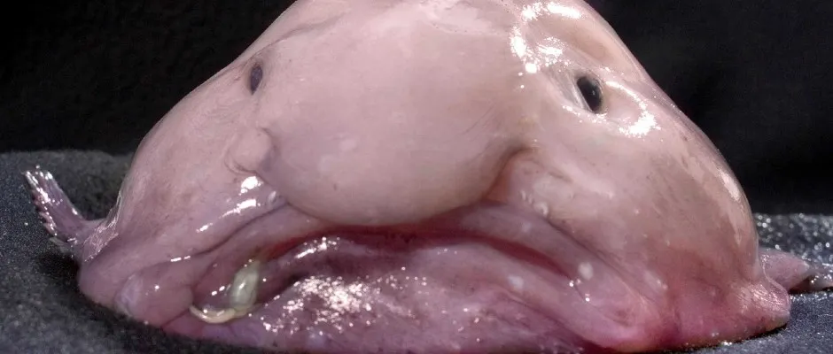

blobfish

Blobfish look almost unrecognizable underwater: These tadpole-shaped
fish have bulbous heads, large jaws, tapered tails, and feathery
pectoral fins. Rather than scales, they have loose, flabby skin.
They don't have strong bones or thick muscle—instead, they rely on
the water pressure to hold their shape together. I dislike it
becasue it's ugly af. LIKE LOOK AT THAT, WHAT ARE THOSE!!!!!
english academie
English Academy is TOTALY an interactive, online course that
cultivates children's interest in English language learning.
Students from primary school follow the story of children and their
teachers as they communicate in reading, writing, listening, and
speaking. I dislike this because it's a waste of time and it is a
waste of living time and money.

H.W.
Homework is an important part of a student's education as it helps
in developing various core skills that serve them a lifetime. It
reinforces learning and helps students retain and understand the
material better. I dislike it becasue it takes to much time to do
it.

Justin Beaver
No info about JUSTIN BEAVER, A beaver whos name is Justin who is a
very famous singer in the beaver world.

Ronaldo
He was born in Portugal. He grew up in his hometown called Madeira
and when he was twelve he moved to Lisbon. He always had a passion
over football since his childhood. Ronaldo started his football
career as a youth player for Andorinha, he played for two years
there then later he went to C.D. I dislike him becasue he is gready
and he is very mean and he is bad at his job.

School
What is the short description of school? Schools are organized
spaces purposed for teaching and learning. The classrooms where
teachers teach and students learn are of central importance.
Classrooms may be specialized for certain subjects, such as
laboratory classrooms for science education and workshops for
industrial arts education. I dislike it because... OH NO NOT AGAIN
MY MOM IS SPANKING ME FOR NOT LIKING SCHOOL OOF